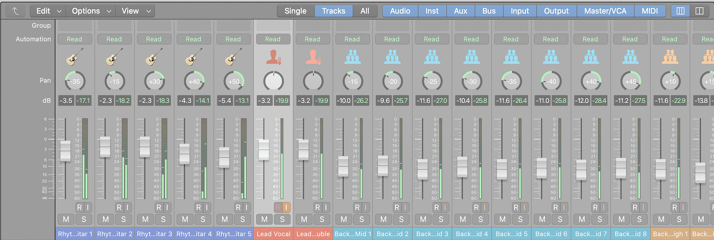
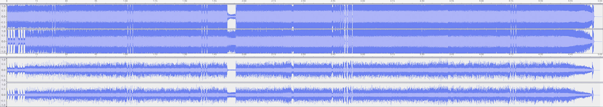

What is the Loudness War?
History of the Loudness War
Have you ever listened to song that amped you up, or made you cry? What was it about the song that moved you so much? Was it the singer, the beat, the music, your headphones? How about songs that you don't like? So many factors contribute to the listening experience. But, as a formally trained audio engineer, I can say that even a well-written song, sung by a phenomenal singer, with some of the best musicians on the track can still fall victim to the consequences of the "Loudness War" and make listening quite unpleasant. But most people are unaware of the Loudness War and the artistic havoc it's wreaked on society, and how it affects them. Let's examine one big reason why music can inspire or irritate, coming from an industry insider. The answer might surprise you!
Before delving into the Loudness War, here is a small disclaimer. Audio engineers are notorious for getting technical, like discussing dynamic range, dBVU v. dBFS, microphone placement and the science behind wave propagation, etc. Stick with me, and I'll explain these simple concepts with complex-sounding names. But beware, you may never to listen to music the same way again. Take the red pill at your own risk! Ready? Here we go!
First, let's go back in history, when music was recorded (or "tracked") using analog gear, such as large format recording consoles with lots of electronics, mechanical reel-to-reel tape machines that captured audio on magnetic tape, outboard equipment, such as compressors, equalizers, reverb units, etc. This gear shaped the sound to create a final mastered track, with the signature saturated "warm" analog quality that's characteristic of vinyl records, 8-track, or cassette tapes.
When computers became more powerful, a new medium appeared in the early 1980s in the form of digital audio stored on Compact Discs (CDs). No expensive bulky mechanical tape machine was needed, but rather computer software that recorded nearly unlimited audio in the form of digital binary code (0s and 1s) onto hard drives. CDs provided a "cleaner" signal, without the pops and clicks of vinyl records, and could be easily produced and distributed without signal degredation, unlike magnetic tape. It was cheaper to record and mix on a computer with plugin emulations. Analog gear is expensive, difficult to maintain, and requires lots of space to store. Many large commercial studios still use some analog gear, but rarely ever 2-inch reel-to-reel Studer or Otari tape machines. Instead, most studios traded tape machines for hard drives, and use Digital Audio Workstations DAWs, such as Avid Pro Tools or Apple Logic Pro to record and mix audio. But no one expected the shift from analog to digital audio to signal one of the worst wars on artistic expression. Let's examine some of the differences between analog and digital audio to get some context on the Loudness War.
Digital audio and analog audio have some big differences. First, analog loudness is measured using decibels volume units (dBVU), while digital audio is measured using decibels full scale (dBFS). We'll get to the differences between the two measurements in a second. Analog gear, such as vacuum tubes in guitar amplifiers, or tape machines, impart harmonics that create a type of saturation that gives it that "warm" thick sound that you hear on most music before the 1990s. Recording engineers would often "push" a track's recording level going to tape just a decibel (dB) or two over the 0dBVU mark on the meter to create the coveted analog "warmth." But this is not the case when it comes to digital audio. Digital audio cannot go over the 0dbFS mark. You cannot "push" a digital track beyond its maximum paramenters like you can with analog audio equipment. When a digital audio signal hits, or tries to go past the 0dbFS mark on the track's meter, it will create what is called "clipping", which results in a very distorted signal. Once a signal being recorded clips, it can't be undone! It's gone forever! Analog gear is much more forgiving when it comes to pushing levels going to tape. If the recording levels were perfect, but a mixing or mastering engineer boosted levels to the point of clipping during the mixing stage, then at least that is correctable with a remix. It's vital to set digital audio levels properly to prevent clipping the audio no matter which stage in the creative process. A great way to remember to keep your signal in the healthy dynamic range is to remember that the analog 0(dBVU) is equivalent to the digital -18dbFS, with a maximum peak of -6dbFS. This will provide enough headroom for adding effects, such as compression, equilization, reverb, delay, etc. without overloading the master stereo output during the mixing stage. What proper levels also provide is more spatial placement recognition. For example, when you pan the guitar to the left, you will be better able to hear it as such more clearly than a hypercompressed mix.
Now that we got all of that technical jargon out of the way, let's see how the Loudness War came about. With the introduction of digital audio, record labels noticed that digital audio could be made louder through compression and limiting. After all, why should a record label allow their competitor's albums to sound louder than theirs? So, the labels began demanding mastering engineers, who polish and arrange the songs, to make albums that sounded louder, and to get it as close to the 0dbFS mark as possible. At first, this may sound harmless. Music always sounds better when played louder, right? Not always.
Many record label business executives do not have extensive on-the-ground experience in the studio, producing, mixing and mastering music. As a business, a record label makes decisions that affect profit, while musicians and studio personnel mostly work towards artistic expression. A successful mastering engineer with 30 years of experience has highly tuned ears, techincal mastery over his or her gear, and knows what it takes to create a hit record from the artistic standpoint. When business executives from record labels stepped in and began making decisions normally relegated to the studio experts, thus began the Loudness War. Think of it as the investors of a private hospital telling the doctors how to treat patients in order to maximize their own profits.
Early in the 1980s, the digital waveform of a stereo track contained prominent peaks and dips, indicating broad dynamic range, room for the track to breathe, punchier transients, and much better spatial placement awareness of the elements in the track, such as vocals, instruments, effects, etc. Over time, CDs became louder and louder, leading to what is known as "hypercompression". Despite prominent audio engineers speaking out about the effects of hypercompression, record labels continued to insist on "louder" tracks. "Remastered" versions of classic albums hit the market. But something awful was happening...
While audio engineers protested behind the scenes, the public was blissfully unaware of the longterm effects of listening to hypercompressed music. Many noticed ear fatigue, but could not explain why. Others were unable to clearly identify instruments that once sat in their own frequency pockets because of the gigantic hypercompressed wall of sound blaring through their earpods or speakers. Others expressed a general dislike for "music today". What is a remedy to this problem?
With the introduction of mp3s and other lossy digital formats that removed data from a digital audio file in favor of a smaller file size, it had an interesting effect. When creating an mp3s from a well mixed CD, the amount of discarded information can be audible. But when creating an mp3 from a hypercompressed CD, the result can actually be closer to an early CD because of the amount of data that mp3s remove from a track. The thick waveforms of hypercompressed music tended to be less obvious, although clipping still cannot be corrected. However, this is nowhere near a remedy to the Loudness War.
But hope is not lost! Over the past few years, after much debate, and audio engineers raising awareness, songs are now being mastered with increased dynamic range. With the resurgence of vinyl records among young listeners, comes education in why music sounded so full of life, with lots of punch and clarity on those old records. The music industry has forever changed. With more artists creating tracks at home and bypassing record labels, the artist is more free to choose the medium and platform to release their work. Major streaming services are now normalizing their audio to a more reasonable level. After nearly a 20-year war, with countless tracks falling victim, enough voices were raised to make a change. In fact, Bob Katz, a renouned audio engineer recently noted that we may have finally ended the great Loudness War!
More Resources on the Loudness War
-

The Loudness War Explained
Click the Learn More button to watch a short, but informative YouTube video on the Loudness War, along with examples.
-

Dynamic Range DB
Click the Learn More button to check how compressed your favorite albums are at the Dynamic Range Database.
-
Modern Loudness
Click the Learn More button to read more about the Loudness War from the July/August 2018 digital issue of TapeOp magazine.
About the Author
Arjun Ramesh is a graduate of the Conservatory of Recording Arts & Sciences and is certified in Digidesign (now Avid) Pro Tools 6.x, Apple Logic Pro 7 & 8, Antares Auto-Tune 4, JBL Vertec Technology, and more. Arjun has experience with large format consoles, such as the SSL 4056 E/G+ and Neve VR, as well as mechanical Otari and Studer A800 reel-to-reel tape machines. With studio and live sound experience, Arjun continues to pursue his passion for recording, mixing and producing, although not in the same capacity as before. He also has a passion for the guitar, photography, spirituality, computer science, and has been an ethical vegan since 2012.